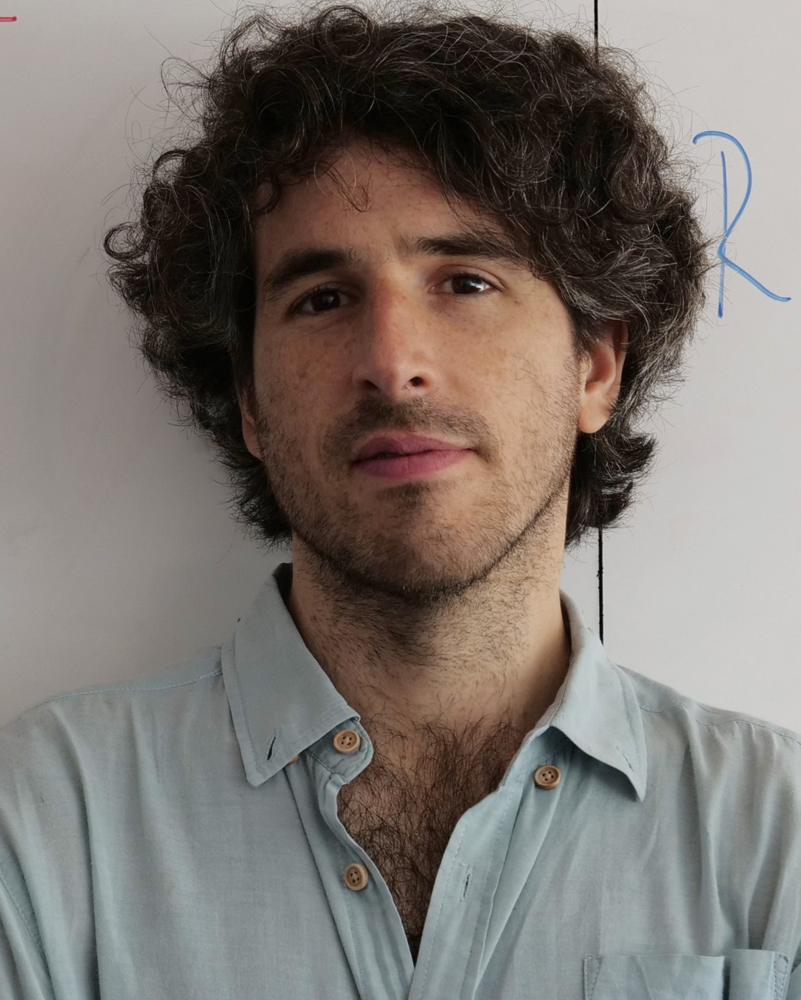

Benjamin Bustos (University of Chile)
Multimedia Databases
Abstract:
Multimedia databases refers to collections of multimedia data. The problem of managing multimedia data is complex, because instead of a "match" between two objects there are "similar" or "relevant" objects to a given query. In this tutorial, I will explain how similarity can be defined to model multimedia data, how to index multimedia databases for efficient similarity search, and how similarity queries can be expressed in modern query languages.

Domagoj Vrgoc (Pontifical Catholic University of Chile)
Aidan Hogan (University of Chile)
Graph Databases
Abstract:
In this tutorial we will provide an introduction to graph databases, which have gained significant attention in recent years, particularly for their ability to model, store, and provide a query capability for large-scale knowledge graphs. The tutorial will be divided into two parts. The first part will introduce and motivate graph databases in the broader context of data management, discussing their advantages (and disadvantages) compared with relational databases, their data models, their key applications, providing also a short demo of graph database engines in use. The second part of the tutorial will focus on querying graph databases, introducing the key primitives used for querying graphs, along with some popular graph query languages, before concluding with a brief overview of indexes and algorithms that enable the efficient evaluation of queries over graph databases.
Yudith Cardinale (University Simon Bolivar of Venezuela)
Big Data processing - MapReduce and Spark applications
Abstract:
The production of data by users on the Web (blogs, social networks, etc.) and the sharing of ubiquitous information (sensors and mobile devices, cameras, microphones, photographs, etc.), drastically increases the amount of data that can be processed and the perspectives of interpretation. These data are presented in formats that are difficult to process with traditional DBMS; they are not organised in tables and the structure can vary (from structured to unstructured); they are generated in real time in continuous flows; they come from different sources (mobile devices, sensors, PCs, Laptops, objects, social networks, ...) in a disorderly and unpredictable way. Thus, new paradigms and techniques are needed to capture, store, search, share, analyze, and visualize, such as huge amounts of data. MapReduce paradigm is the one that faces all these challenges to provide parallel storage and processing in batch mode. In this tutorial, we will revise the main concepts related to the big data boom and two of the most popular big data tools: Hadoop MapReduce and Apache Spark, that provide batch and streaming processing alternatives. We will analyze several study cases and develop, in the lab, simple examples to illustrate their functionalities.

Juan Reutter (Pontifical Catholic University of Chile)
Understanding graph neural networks
Abstract:
Learning from knowledge graphs and other types of networks is an important task in machine learning. However, graph representational learning poses challenges that cannot be tackled by current text-based transformed methods. At their core, graph neural networks are trained to compute embeddings of nodes out of the information present in their neighbours. These networks have been proven useful, but ultimately not powerful enough for complex tasks beyond simple supervised learning. In this tutorial we will survey the basics of the message passing model, the machinery used to study them, and some of the directions for new, more powerful architectures that are currently being explored.